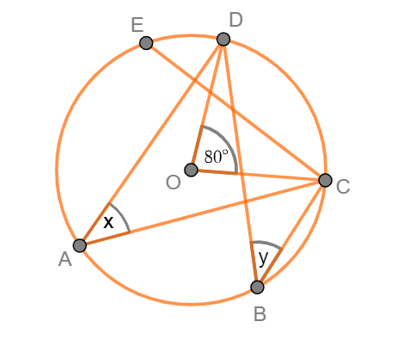
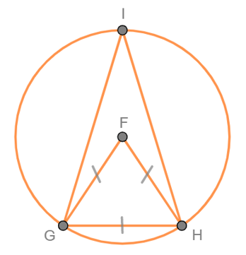
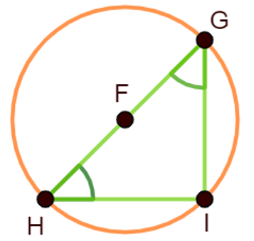
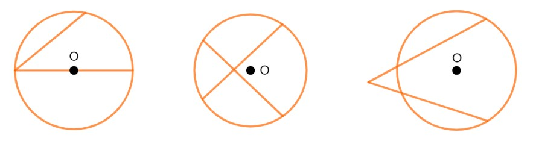
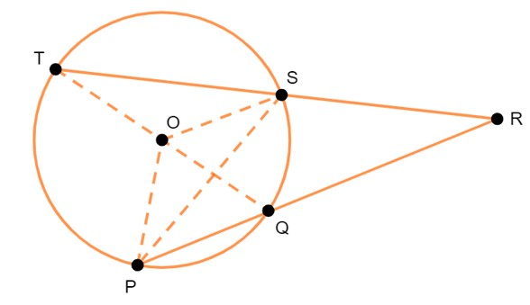
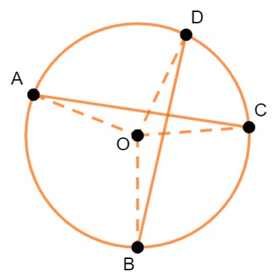

BAB 3
SUDUT-SUDUT PADA LINGKARAN
Sudut Pusat dan Sudut Keliling Lingkaran
Sudut pusat adalah sudut yang dibentuk oleh dua buah jari-jari dan menghadap suatu busur lingkaran. Sementara itu, sudut keliling adalah sudut pada lingkaran yang dibentuk oleh dua tali busur. Jadi, letak perbedaan antar sudut pusat dan sudut keliling adalah elemen pembentuknya, di mana sudut pusat dibentuk oleh dua buah jari-jari dan sudut keliling dibentuk oleh dua buah tali busur (Rahaju et al., 2008).
Perhatikanlah Gambar 13. berikut. Pada Gambar 13., sudut CAB merupakan sudut pusat lingkaran sedangkan sudut EFG adalah sudut keliling lingkaran.

Gambar 13. Sudut Pusat dan Sudut Keliling Lingkaran
Jika sudut pusat lingkaran dan sudut keliling lingkaran menghadap busur yang sama maka besar sudut pusat adalah dua kali dari besar sudut kelilingnya. Untuk lebih paham, coba perhatikan Gambar 14. berikut

Gambar 14. Hubungan Sudut Pusat dan Sudut Keliling Lingkaran yang Menghadap Busur yang Sama
Hubungan sudut pusat dan sudut keliling ditunjukkan dalam Tabel 3. berikut
Tabel 3. Hubungan antara Sudut Pusat dan Sudut Keliling Lingkaran yang Menghadap Busur yang Sama
| Sudut Pusat | Sudut Keliling |
|---|---|
| 2 × sudut keliling | ½ × sudut pusat |
Contoh Soal:
-
Perhatikanlah gambar berikut.

Gambar 15. Sudut Pusat dan Sudut Keliling
Berdasarkan Gambar 15., tentukanlah nilai dari x dan y!
Pembahasan:
Diketahui: Sudut pusat COD adalah 80° dan menghadap busur CD.
Ditanyakan: Nilai x dan y
Penyelesaian:
-
x adalah sudut keliling dan menghadap busur CD sehingga nilai x adalah setengah dari nilai sudut COD, sehingga:
x = ½ × COD = ½ × 80° = 40°
-
y merupakan sudut keliling yang menghadap busur CD sehingga nilai y adalah setengah dari nilai sudut COD, sehingga:
y = ½ × COD = ½ × 80° = 40°
-
-
Perhatikanlah gambar di bawah ini!

Gambar 16. Hubungan Sudut Pusat, Sudut Keliling, dan Suatu Segitiga
Berdasarkan Gambar 16., jika segitiga GHF sama sisi tentukanlah besar sudut FGH dan besar sudut GIH!
Pembahasan:
Diketahui: Segitiga GHF sama sisi sehingga setiap sudutnya berukuran 60°.
Ditanyakan: Besar sudut FGH dan besar sudut GIH
Penyelesaian:
Karena segitiga GHF sama sisi yang artinya setiap sudutnya berukuran 60° maka:
- ∠FGH =60°
-
∠GIH adalah sudut keliling yang menghadap busur yang sama dengan sudut pusat FGH sehingga:
∠GIH = ½ × ∠FGH = ½ × 60° = 30°
Sifat-sifat Sudut Pusat dan Sudut Keliling Lingkaran
-
Sudut keliling yang menghadap diameter lingkaran

Gambar 17. Sudut Keliling yang Menghadap Daimeter Lingkaran
Pada Gambar 17., lingkaran yang berpusat di titik O diameternya adalah PQ dan ∠POQ merupakan sudut pusat sedangkan ∠PRQ merupakan sudut keliling yang menghadapbusur PQ. Pada pembahasan sebelumnya, telah kita ketahui bahwa jika sudut pusat dan sudut keliling menghadap busur yang sama maka:
Sudut pusat = 2 × sudut keliling
180° = 2 × sudut keliling
Sudut keliling = 180°/2 = 90°
Dengan demikian, dapat disimpulkan bahwa:
Sudut keliling yang menghadap diameter lingkaran selalu membentuk sudut 90° atau sudut siku-siku. -
Sudut keliling yang menghadap busur yang sama
Perhatikanlah gambar berikut.

Gambar 18. Sudut Keliling yang Menghadap Busur yang Sama
Gambar 18. menunjukkan bahwa:
- ∠QOR merupakan sudut pusat lingkaran yang menghadap busur QR.
∠QTR merupakan sudut keliling lingkaran yang menghadap ke busur QR.
Jadi, ∠QTR = ½ ∠QOR
∠QPR merupakan sudut keliling lingkaran yang menghadap ke busur QR.
Jadi, ∠QPR = ½ ∠QOR
∠QSR merupakan sudut keliling lingkaran yang menghadap ke busur QR.
Jadi, ∠QSR = ½ ∠QOR
Berdasarkan uraian di atas, diperoleh bahwa: ∠QTR = ∠QPR = ∠QSR = ½ ∠QOR
Dengan demikian, dapat disimpulkan bahwa:
Semua sudut keliling yang menghadap busur yang sama maka besar sudutnya akan sama. -
Sudut-sudut keliling yang berhadapan

Gambar 19. Sudut-sudut Keliling yang Berhadapan
Gambar 19. menunjukkan bahwa POR adalah sudut pusat lingkaran, sedangkan ∠PSR dan ∠PQR adalah sudut-sudut keliling yang besar sudutnya sama. Oleh karena ∠PSR dan ∠PQR merupakan sudut-sudut keliling yang menghadap busur yang sama dengan sudut pusat ∠POR maka berlaku:
- ∠PSR = ½ × ∠POR = ½ × y
- PQR = ½ × ∠POR = ½ × x
Jika sudut keliling tersebut dijumlahkan maka diperoleh:
∠PSR + ∠PQR = {½ × y} + {½ × x}
∠PSR + ∠PQR = {½ × y} + {½ × (360° - y)}
∠PSR + ∠PQR = {½ × y} + {½ × 360°} - {½ × y}
∠PSR + ∠PQR = {½ × y} - {½ × y} + 180°
∠PSR + ∠PQR = 180°
Dengan demikian, dapat disimpulkan bahwa:
Jumlah sudut keliling yang saling berhadapan adalah 180°.
Contoh Soal:
-
Tentukanlah besar sudut GIH, GHI, dan HGI jika sudut GHI sama besarnya dengan sudut HGI.

Gambar 20. Sudut-sudut Keliling Lingkaran
Pembahasan:
- ∠GIH merupakan sudut yang menghadap diameter lingkaran sehingga besar ∠GIH = 90°.
-
Jumlah sudut suatu segitiga adalah 180° lalu besar ∠GHI = ∠HGI maka:
GIH + GHI + HGI = 180°
90° + x + x = 180°
90° + 2x = 180°
2x = 180° - 90°
x = (90°)/2
x = 45°
Jadi, besar sudut GHI dan HGI adalah 45°.
-
Perhatikan lingkaran pada gambar berikut ini.

Gambar 21. Sudut-sudut Lingkaran yang Berhadapan
Jika ∠DAB, ABC, ∠BCD, dan ∠CDA adalah sudut keliling pada lingkaran lalu ∠CDA besarnya 100˚ dan ∠DAB adalah 85˚, tentukanlah:
- besar ∠ABC
- besar ∠BCD
Pembahasan:
Perhatikan bahwa ∠ABC merupakan sudut keliling yang berhadapan dengan sudut keliling ∠CDA
ABC + ∠CDA = 180˚
∠ABC + 100˚ = 180˚
∠ABC = 180˚– 100˚
∠ABC = 80˚
Jadi, besar ∠ABC adalah 80˚
-
Perhatikan bahwa ∠BCD merupakan sudut keliling yang berhadapan dengan sudut keliling ∠DAB.
∠BCD + – DAB = 180˚
∠BCD + 85˚ = 180˚
∠BCD = 180˚– 85˚
∠BCD = 95˚
Jadi, besar ∠BCD adalah 95˚
Sudut antara Dua Tali Busur

Gambar 22. Sudut Keliling Lingkaran
Kita telah mengetahui bahwa sudut keliling merupakan sudut dari perpotongan dua tali busur yang tepat berada di lengkungan lingkaran, seperti yang ditunjukkan oleh Gambar 22. di atas.
Namun, tahukah kamu bahwa terdapat bentuk-bentuk lain dari perpotongan tali busur pada sebuah lingkaran? Bentuk-bentuknya antara lain yaitu perpotongan tali busur di dalam dan di luar lingkaran seperti yang ditunjukkan oleh Gambar 23. di bawah ini.

Gambar 23. Perpotongan Tali Busur Lingkaran
Jika kedua tali busur saling berpotongan di dalam atau di luar lingkaran, bagaimana cara menghitung besar sudutnya? Untuk mengetahui cara menghitung sudutnya, pelajarilah uraian berikut.
Saling Berpotongan di Dalam Lingkaran

Gambar 24. Perpotongan Tali Busur di Dalam
Pada Gambar 24., lingkaran O memiliki jari-jari OP, OQ, OR, dan OS. Adapun SQ dan PR merupakan dua tali busur yang berpotongan di titik T. Dari gambar tersebut, diperoleh:
- ∠PQS = ½ · ∠POS
- ∠QSR = ½ · ∠QOR
Misalkan, kita akan menghitung besar sudut PTS. Dengan menggunakan hubungan sudut dalam dan luar segitiga, diperoleh:
∠PTS = ∠PQS + ∠QSR
∠PTS = ½ – POS + ½ . ∠QOR
∠PTS = ½ (∠POS + ∠QOR)
Dengan demikian, dapat disimpulkan bahwa:
Besar sudut antara dua tali busur yang berpotongan di dalam lingkaran adalah setengah kali dari jumlah sudut pusat yang berada di depannya.Contoh Soal:

Gambar 25. Perpotongan Tali Busur di Dalam Lingkaran
Perhatikan lingkaran pada Gambar 25. Jika besar sudut pusat AOB adalah 80˚ dan sudut pusat DOC adalah 40˚, tentukanlah:
- besar ∠AEB
- besar ∠DEC
- besar ∠BEC
- besar ∠AED
Pembahasan:
-
∠AEB = ½ · (∠AOB + ∠DOC) = ½· (80˚ + 40˚) = ½· (120˚) = 60˚
Jadi, besar ∠AEB adalah 60˚.
-
∠DEC = ∠AEB, saling bertolak belakang
∠DEC = 60˚
Jadi, besar ∠OEB adalah 60˚
-
∠PQR = ½ · (360˚ – (∠AEB + ∠DEC) = ½ · (360˚ – (60˚ + 60˚) = ½ · (360˚ – 120˚) = ½ · (240˚) = 120˚
Jadi, besar – PQR adalah 120˚.
-
∠AED = ∠BEC, saling bertolak belakang
∠AED = = 120˚
-
Saling Berpotongan di Luar Lingkaran

Gambar 26. Tali Busur yang Berpotongan di Luar
Perhatikanlah Gambar 26. Berdasarkan gambar tersebut ditunjukkan bahwa POT dan SOQ merupakan sudut pusat lingkaran. TR dan PR merupakan dua tali busur lingkaran yang saling berpotongan di luar lingkaran pada titik R. Dari gambar tersebut, diperoleh:
- ∠TSP = ½ – TOP
- ∠SPQ = ½ – SOP
Dengan menggunakan hubungan sudut dalam dan sudut luar segitiga, diperoleh:
∠TRP = ∠TSP – ∠SPQ = ½ · ∠TOP – ½ · ∠SOP = ½ · (∠TOP – ∠SOP)
Dari uraian tersebut, diperoleh hubungan bahwa:
Besar sudut antara dua tali busur yang berpotongan di luar lingkaran adalah setengah kali selisih sudut pusat yang terletak di antara kedua tali busur tersebut.Contoh Soal:

Gambar 27. Perpotongan Tali Busur di Luar Lingkaran
Berdasarkan Gambar 27.. di atas, Jika besar sudut pusat AOE adalah 100˚ dan sudut pusat BOD adalah 30˚, tentukan besar sudut ACE.
Pembahasan
Oleh karena tali busur AC dan CE berpotongan di luar lingkaran maka :
∠ACE = ½ · (∠AOE – ∠BOD) = ½ · (100˚ – 30˚) = ½ · 70˚ = 35˚
Jadi, besar ∠ACE adalah 35˚
Ringkasan
- Sudut pusat adalah sudut yang dibentuk oleh dua buah jari-jari dan menghadap suatu busur lingkaran.
- Sudut keliling adalah sudut pada lingkaran yang dibentuk oleh dua tali busur.
- Jika sudut pusat lingkaran dan sudut keliling lingkaran menghadap busur yang sama maka besar sudut pusat adalah dua kali dari besar sudut kelilingnya.
- Besar sudut keliling yang menghadap diameter lingkaran adalah 90°.
- Semua sudut keliling yang menghadap busur yang sama maka besar sudutnya akan sama.
- Jumlah sudut keliling yang saling berhadapan adalah 180°.
- Besar sudut antara dua tali busur yang berpotongan di dalam lingkaran adalah setengah kali dari jumlah sudut pusat yang berada di depannya.
- Besar sudut antara dua tali busur yang berpotongan di luar lingkaran adalah setengah kali selisih sudut pusat yang terletak di antara kedua tali busur tersebut.
Latihan
Kerjakanlah soal-soal berikut ini dengan benar!
- Nyatakanlah hubungan antara sudut pusat dan sudut keliling!
- Berdasarkan gambar di bawah ini, tunjukkanlah:
- Sudut keliling dan besarnya
- Sudut pusat dan besarnya

- Jika sudut pusat PQR adalah 160° dan sudut keliling POR adalah 2x. Maka tentukanlah nilai dari x!
Berapakah besar sudut QOR jika besar sudut QTR adalah 30°?

Jika besar sudut AOB adalah 70° dan besar sudut DOC adalah 45° maka berapakah besar sudut AEB?

Pembahasan:
-
Hubungan antara sudut pusat dan sudut keliling yaitu:
Sudut pusat = 2 × sudut keliling
Sudut keliling = ½ × sudut pusat
-
Diketahui : sudut ACB besarnya adalah 45°
Ditanyakan : sudut pusat dan sudut kelilingnya beserta ukurannya masing-masing
Penyelesaian :
- Jika kita amati gambar tersebut, sudut yang dibentuk oleh dua buah tali busur adalah sudut ABC, sehingga sudut kelilingnya adalah sudut ABC sehingga besar sudut kelilingnya adalah 55°.
- Jika kita amati kembali gambar tersebut, sudut yang dibentuk oleh dua buah jari-jari adalah sudut AOC, sehingga sudut pusatnya adalah sudut AOC. Besar sudut pusat adalah dua kali lipat dari besar sudut keliling sehingga: ∠AOB = 2 × ∠ACB = 2 × 45°= 90°.
-
Diketahui: Besar sudut pusat PQR adalah 160° dan sudut keliling POR adalah 2x
Ditanyakan: nilai x
Penyelesaian:
∠PQR = 2 × ∠POR
160° = 2 × 2x
160° = 4x
x = 160°/4
x = 40°
-
Diketahui : besar sudut QTR adalah 30°
Ditanyakan : besar sudut QOR
Penyelesaian :
- ∠QOR merupakan sudut pusat lingkaran yang menghadap busur QR.
- ∠QTR merupakan sudut keliling lingkaran yang menghadap ke busur QR.
Jadi, ∠QTR = ½ ∠QOR = ½ × 30° = 15°
-
Diketahui : besar sudut AOB 70° dan besar sudut DOC 45°
Ditanyakan : besar sudut AEB
Penyelesaian :
∠AEB = ½ · (∠AOB + ∠DOC) = ½ × (70° + 45°) = 57,5°
Evaluasi
Kerjakanlah soal-soal berikut ini dengan benar!
- Apa yang kamu ketahui tentang sudut pusat dan sudut keliling suatu lingkaran? Jelaskan.
- Gambarkanlah lingkaran dengan jari-jari 7 cm dan sudut pusat 120° beserta sudut kelilingnya!
- Jika suatu lingkaran memiliki sudut pusat 3y dan sudut keliling 96°, maka tentukanlah besar sudut pusat tersebut!
- Jika sudut AOB adalah sudut pusat suatu lingkaran yang menghadap diameter 14 cm, maka tentukanlah besar sudut kelilingnya!
- Coba perhatikanlah jam dinding yang berbentuk lingkaran! Saat waktu menunjukkan pukul 03.00 maka sudut yang terbentuk adalah sudut pusat ataukah sudut keliling lingkaran?